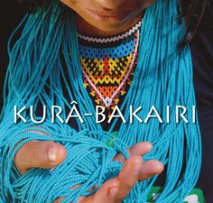

História da tribo Bakairi
 Em 1999, o país possuía 950 integrantes do povo Bakairi. Os Bacairi ou Bakairi se intitulam Kurâ, que significa gente, ser humano. Eles residem no centro do estado brasileiro de Mato Grosso, sobretudo nas Terras Indígenas Santana (Iemârire) e Bakairi. Se autodeclaram os verdadeiros Kurâ, a humanidade por superioridade, devendo os demais ser especificados. Kurâ se expressa no sentido restrito: "Nós, os Bakairi"; "O que é nosso". O termo Bakairi é para eles de berço desconhecido e situa-se registrado nos relatos da história regional desde o século XVIII.
Devido a combates internos e ameaças de povos indígenas inimigos (principalmente os Kayabí), os Bakairi deslocaram-se em três diferentes direções. Uma quantia migrou para as “cabeceiras do Arinos" e foi a primeira a ser vista por bandeiras nas primeiras décadas do século XVIII, sendo a partir de então comprometida nas atividades mineradoras. A segunda deslocou-se para o alto Paranatinga e foi intrometida nas primeiras décadas do século XIX por colonizadores dedicados à pecuária, agricultura e atividades a elas subsidiárias. A terceira, que era a maior parcela, tomou o rumo do alto Xingu, perdendo o contato com as outras duas.
Estes dois últimos grupos, Santana e do Paranatinga, tiveram comunicação com a Diretoria Geral de Índios em Cuiabá. Foram obrigados trabalhar na extração da borracha. Tentaram partir para o Paranatinga em 1920 a 1940, mas foram expulsos por serem acusados de roubar gado. O Posto Santana foi fundado em 1965 e os missionários do SIL iniciaram seus trabalhos com eles (Barros 1999). Já os Bakairi do Paranatinga foram guias construtores de canoas e comentadores nas expedições realizadas em 1884 e 1887 de Karl von den Steinen (médico, explorador, etnólogo e antropólogo alemão) e nas outras que as sucederam. Através delas se restabeleceram as relações entre os Bakairi Orientais e os Ocidentais na terminologia de Steinen. Antes, os Bakairi do alto Xingu e demais povos que lá viviam eram desconhecidos da população branca.
Em 1920, o Posto Indígena foi criado e demarcado pelos Bakairi e inclusive os do Xingu mudaram-se para viver na Terra Indígena. O objetivo era trazer para terra indígena todos os alto-xinguanos e apossar-se de terras e mão-de-obra para a colonização. No entanto, apenas os Bakairi foram definitivamente para o Paranatinga e, três anos depois, não se menciona mais sua existência no alto Xingu.
Fontes:
https://bit.ly/2S8eVI3
https://bit.ly/2S8oKFT
https://bit.ly/2TCuXvk
https://bit.ly/2BnJlAi